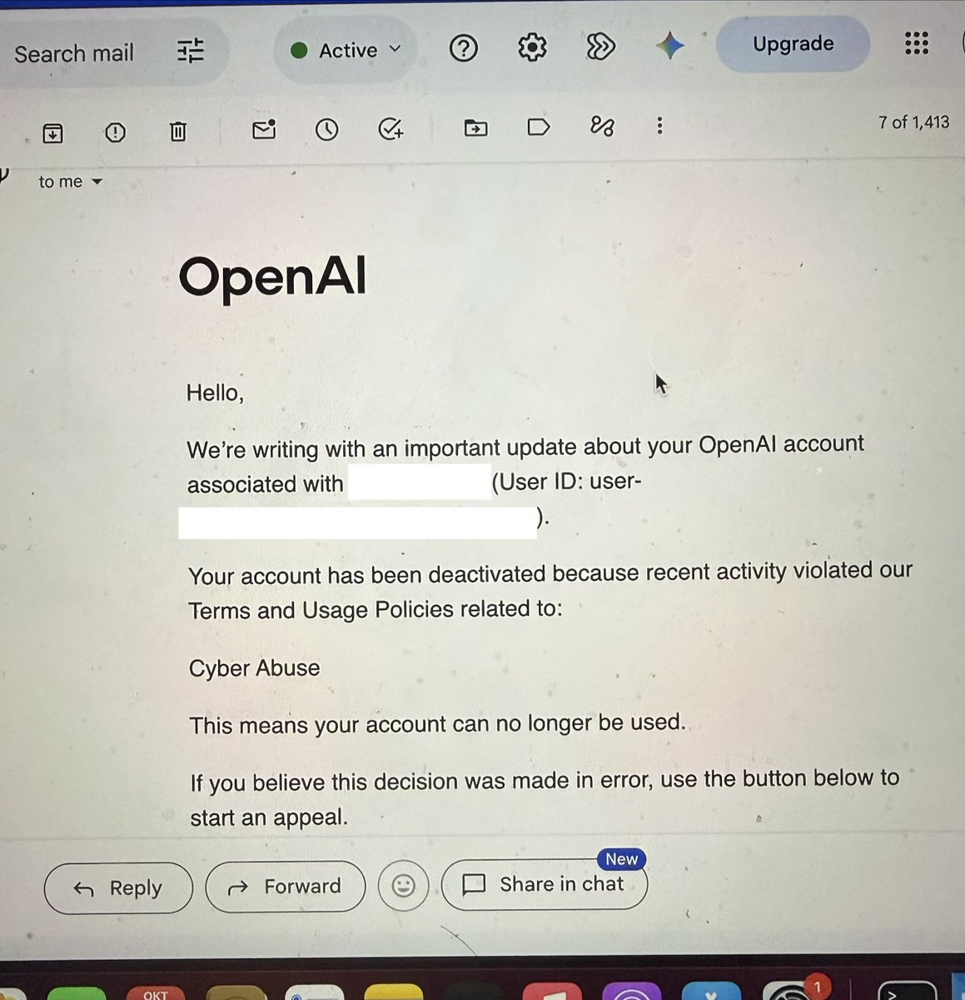
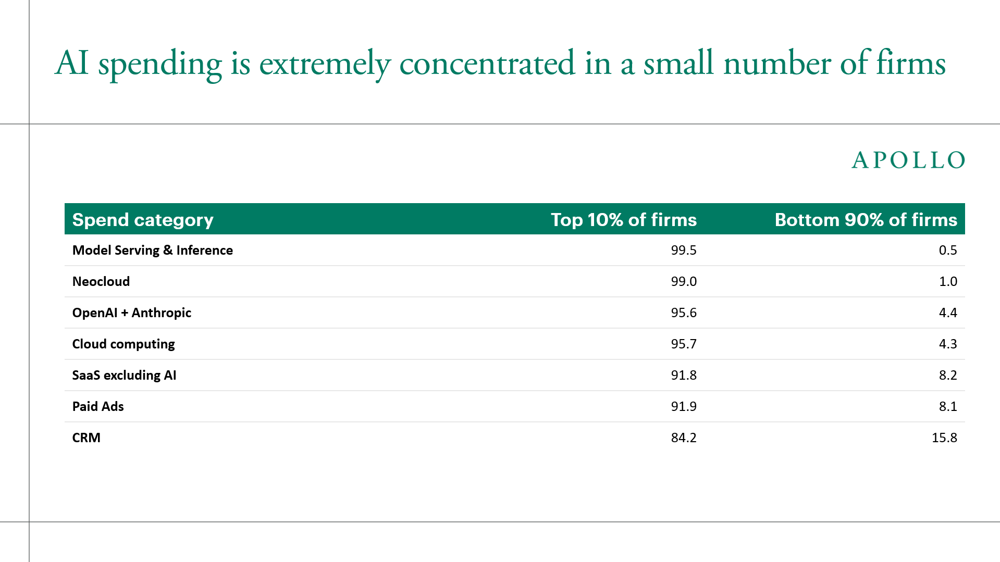
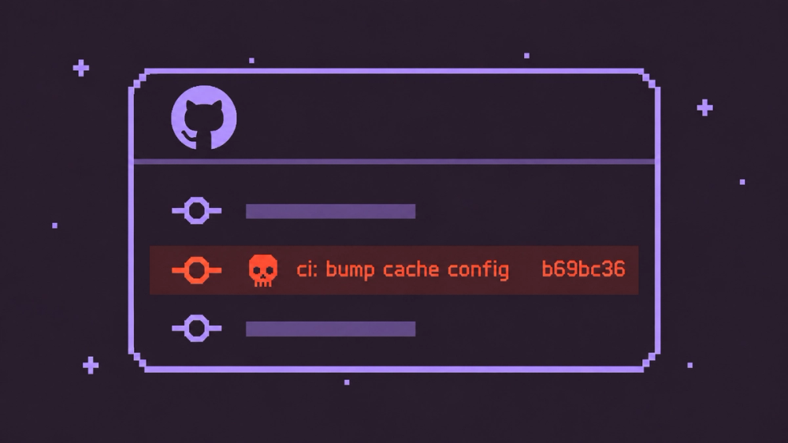

AI Intelligence Daily · 2026-10-25（周日）
今日一句话判断
周末窗口没有新旗舰发船，主线从「能力」切到「准入与边界」：美国大行开始拦第三方 AI Agent 代登录、只放行经开放银行聚合方的只读通道；MCP Inspector 曝 OAuth 回调可注入 stdio 命令的 Critical 漏洞；英国一次性抛出 £600m+ 的 AI 安全 / 生物安全 / Agent 化网络防御包；Brotli「HTTP2Shell」影响面从 Node 扩到 Python / Envoy / Istio。 商业侧，据 The Information，OpenAI 以 30%+ 折扣把 Replit 主力 AI 支出抢走，与前一天 Chroma 并入 Replit 一起，说明 Agent 平台的模型与数据底座正在快速重新站队。对你的两条主线：「谁能以什么权限代表用户进入第三方系统」正在被银行、协议工具、政府三方同时定义——这是智能体互联网授权层最值得提前布局的窗口。
专栏一｜新闻
本栏结构：
- 已快讯推送的 5 件事（Claude Enterprise 统一 GA、MCP Tasks+Elicitations、LiteLLM 攻击链定稿、Chroma→Replit、HumanLayer 开源）只在「重点事件新进展」收录增量，不重复 NEW 长条
- 国际长条 4 条：美国大行限制第三方 AI Agent / MCP Inspector Critical 漏洞（补记）/ 英国 £600m+ AI 安全包 / Brotli HTTP2Shell 扩面（UPDATE 132）
- 国际中条 2 条：OpenAI×Anthropic 企业价格战（据报）/ OpenAI 解雇安全研究员内情（UPDATE）
- 国内长条 1 条：国办发〔2026〕29 号 AI 就业意见（补记）
- 合并短讯：DeepSeek 融资（据报）、讯飞 Agent OS + XFYUN CLI（补记）、Google 隐私政策、WorkBuddy 接入 K3.1 Pro
排序依据：重要度 → 用户相关性 → 时效。
1. 美国大行开始拦截第三方 AI Agent 代登录：只读可经开放银行聚合方，写权限另当别论
发生了什么（事实）
- Axios（10-22）首报，随后 USA Today（10-23）、CBS News（10-23）跟进：美国多家大行正在限制客户把账户凭证交给第三方 AI Agent 直接登录或交易。
- 报道所述立场（多为匿名信源 + 部分银行声明）：
- Morgan Stanley 被报道为直接拦截；JPMorgan、BofA、Citi、Wells Fargo 为限制；
- Citi 声明：「We do not permit third-party AI agents or assistants to log into a customer's account or transact directly…」；
- 折中路径：经 Plaid 等开放银行聚合方 的只读访问。
- 背景：JPMorgan CEO Dimon 在 10-13 财报电话会上已谈及 Agent 访问（据 CNBC 报道）；报道引 Palo Alto 调研称约 2/3 金融业 CISO 把 agentic AI 列入前三大风险。
- 窗内争议：David Sacks 在 X 上称，用户授权的 Agent（举例 Muse、Instinct、Grokbot）「in no way cyberattacks」，但也承认「full write access」属于不同风险类别，建议先开放只读。
- 本库此前仅在 10-14 日报短提「JPMorgan 拒外部 agent 代登录」，10-24 快讯 13:14 列为 near-miss，日报补收。
图 1 · CBS 报道题图（Getty Images）· 来源：cbsnews.com
我的判断
- 这是「Agent 代表用户进入第三方系统」第一次在高价值行业被成批、公开地划线：不是禁 AI，而是禁「拿用户密码模拟登录」。
- 「只读经聚合方 / 写权限另议」的分层，基本就是委托授权协议要标准化的那一层：谁签发、什么 scope、可撤销、可审计。
- 匿名信源占比高，各家实际执行力度需看客户条款与 API 文档更新，暂定 A 不升 S。
未来影响
- 消费级 Agent（浏览器 / Computer Use 类）在金融站点的「屏幕操作」路线会越来越频繁地撞风控；
- 开放银行聚合方（Plaid 等）与银行自有 Agent API 将成为合规通道，FDX / CFPB 1033 类规则会被重新拿来讨论 Agent 场景。
对智能体互联网
- 直接对应你的「身份 / 授权 / 委托」主线：需要能表达「用户 → Agent → 聚合方 → 银行」多跳委托链、只读 vs 交易 scope、单次交易确认的凭证格式。
- 「Agent 自报身份」比「伪装成用户」更可能被放行——Agent 身份声明 + 可验证委托会成为准入门票。
对 Work·Agent 引擎
- Computer Use / 浏览器 Agent 需要内置「敏感站点策略」：遇到银行类登录默认转人工或走官方 API；凭证不进模型上下文。
建议动作：在授权模型里补「只读 / 交易」两级 scope 与「每笔确认」模式；把银行类站点加入 Computer Use 默认 deny-list 草案；跟踪各行客户协议条款更新。
2. MCP Inspector Critical：恶意远程 MCP 服务器经 OAuth 回调注入 stdio 命令 → 本机 RCE（GHSA-4fc4-wcmh-4g86）
发生了什么（事实）
- 官方通告 GHSA-4fc4-wcmh-4g86，评级 Critical，向量
CVSS:3.1/AV:N/AC:L/PR:N/UI:R/S:C/C:H/I:H/A:H。 - 影响：
@modelcontextprotocol/inspector与inspector-client>=0.13.0，<=1.0.2；1.0.3 修复。npmv1-latest标签为 1.0.3（2026-10-21 18:35Z 发布）；latest已是 2.x 线（2.12.0）。 - 机制（通告原文复述）：
- 用户连接一个恶意远程 MCP 服务器，其 OAuth 流程把浏览器重定向到 Inspector 本地的
/oauth/callback?code&state&transport=stdio&serverCommand=…&serverArgs=…； - 旧版 App 从
window.location初始化连接状态，OAuth 回调完成后自动重连，经本地/stdio代理用StdioClientTransport启动攻击者指定命令； - 修复：重定向前保存连接参数，回调只解析 OAuth 字段。
- 用户连接一个恶意远程 MCP 服务器，其 OAuth 流程把浏览器重定向到 Inspector 本地的
- 仓库 modelcontextprotocol/inspector ★11,142。
我的判断
- 典型「远程协议面 → 本地进程面」越界：OAuth 回调 URL 被当成配置输入，是所有「本地 Agent 工具 + 远程 OAuth」组合的共性坑。
- 漏洞在开发者工具而非生产服务，但开发机往往持有最高权限凭证，危害不低。
未来影响
- MCP 客户端（IDE、桌面 Agent）都在接 OAuth 远程服务器，同类「回调参数污染本地启动配置」问题大概率会在其他客户端复现。
对智能体互联网
- 授权回调必须只承载授权结果；连接意图（目标、transport、命令）应在发起前绑定到
state并服务端校验。
对 Work·Agent 引擎
- 本地 stdio 启动器必须与 URL / 远程输入隔离：命令白名单、显式用户确认、不因回调自动重连。
建议动作：团队内 npx @modelcontextprotocol/inspector 固定 ≥1.0.3 或 2.x；审计自家 MCP 客户端 OAuth 回调是否读取非 OAuth 参数；把这一模式写进 MCP 客户端安全检查单。
来源：GHSA-4fc4-wcmh-4g86 · npm @modelcontextprotocol/inspector
3. 英国 £600m+ AI 安全包：AI Biosecurity Lab、AISI 追加 £120M、£60M Agent 化「National Cyber Shield」
发生了什么（事实）
- GOV.UK：Introducing the AI Biosecurity Lab（10-24）：
- AI Biosecurity Lab（AIBL）：政府 £100M + 企业承诺最高 £200M；
- OpenAI 经 Rosalind Biodefense 项目提供 £100M 算力 / 模型额度；Anthropic 提供最高 £100M 额度、可信访问与支持；Google DeepMind、Basecamp Research 为合作方；
- £165M National AI Biosecurity Initiative，其中 £65M 用于生物监测与对策。
- GOV.UK：Chancellor unveils Britain's ambitious plan for AI（10-24）同步列出：
- AISI 追加 £120M；
- £60M National Cyber Shield：用 agentic AI 做国家级网络防御，含 £25M 挑战基金，并研究为关键基础设施的 agentic 网络安全方案设监管沙盒；
- £70M NERV Centre；每年 £10M 就业影响研究。
- techUK 等将其合称为「£600m+ package」；BBC、Reuters 有报道。
我的判断
- 两个信号：①前沿实验室以额度 + 可信访问而非现金参与国家安全项目，成了新的政企合作模板；②政府开始为「Agent 做网络防御」设监管沙盒——Agent 被当作关键基础设施的防御主体，而不只是被防对象。
- 金额组合口径（£600m+）来自行业组织归纳，以各条官方数字为准。
未来影响
- AISI 资金扩张 + Mythos 类评估合作（watchlist 128），英国会继续是前沿模型第三方评估的主要场所；
- 「agentic cyber 沙盒」若落地，将形成 Agent 在 CNI 环境中行动权限的首批监管样板。
对智能体互联网
- 可信访问（trusted access）分级正在成为政企通用语言：值得在 Agent 身份 / 准入模型中预留「组织级可信等级」字段。
对 Work·Agent 引擎
- 防御型 Agent 进入关键基础设施，审计日志、动作回放、权限最小化是入场门槛，与你的 Runtime / Sandbox 设计直接同构。
建议动作：跟踪 £25M 挑战基金与监管沙盒的申请条件文本；将「trusted access 分级」列入 Agent 准入模型调研。
4. Brotli「HTTP2Shell」扩面：Python / Bun / Envoy / Istio 均需补丁，主流扫描器尚未标记 PyPI 包（UPDATE watchlist 132）
发生了什么（事实）
- 此前（Daily 10-24）：OpenAI 公开 Brotli 未认证 RCE CVE-2026-111497，主要按 Node 解压路径讨论。
- 今日新增（Aikido）：
- 影响面扩到其他语言与 HTTP 服务；攻击可双向（客户端解压恶意响应 / 服务端解压恶意请求）；
- 修复版本：Node 22.23.4 / 24.22.1 / 26.12.1；libbrotli 1.2.1（旧线 1.0.10 / 1.1.1）；PyPI
Brotli1.2.1、brotlicffi1.2.1.0；Bun 1.4.4；Envoy 1.40.0 / 1.39.3 / 1.38.6 / 1.37.8；Istio 1.29.9 / 1.30.6 / 1.31.2； - Apache mod_brotli、Nginx 默认不解码请求体；
- 截至 10-23，pip-audit、Dependabot、Safety 尚未标记 PyPI 受影响包；
- 技术细节：CVSS v4 9.2，CWE-252/787，根因在
DecodeBlockTypeAndLength()，上游 commit0ed4268增加错误码 -17； - 临时缓解：拒绝
Content-Encoding: br请求、从Accept-Encoding去掉 br（单独使用不充分）。
- HN #50219177 270 pts / 136 comments。
我的判断
- 判断升级：从「Node 补丁」变为「整个 Agent 工具链的 HTTP 依赖面」——Python Agent 框架、网关（Envoy/Istio）都在路径上，而扫描器滞后意味着「CI 绿灯 ≠ 已修」。
未来影响
- Agent 抓取任意外部 URL 的场景（浏览、工具调用）天然处在「客户端解压恶意响应」的攻击面上。
对智能体互联网：Agent 网关 / 服务网格（Envoy/Istio）需补丁窗口与版本证明。
对 Work·Agent 引擎：Sandbox 镜像与工具 runtime 按上述版本手动核对；抓取器默认关闭 br 解码直至修复。
建议动作：今日内对 Node / Python / Envoy / Istio 依赖手动 grep 版本（不依赖扫描器）；Web 抓取工具临时移除 br。
来源：Aikido · HN #50219177
5. 据报 OpenAI 以 30%+ 折扣抢走 Replit 主力 AI 支出：企业编码 Agent 的模型份额开始随价格迁移
发生了什么（事实，均为据报）
- The Information：Anthropic's Margin is OpenAI's Opportunity（10-24，Techmeme 收录）：
- Anthropic 停止对 Replit 的折扣后，Replit 把大部分 AI 支出转向 OpenAI，OpenAI 给出 30%+ 折扣，合同规模 每年 $100M+；
- Rippling 编码工作中 OpenAI 份额 16%（5 月）→ 52%，Anthropic 57% → 18%。
- 关联：前一天 Chroma 宣布并入 Replit（watchlist 134，已快讯）。
我的判断：编码 Agent 平台对单一模型商的忠诚度很低，「毛利 vs 份额」开始直接决定谁是默认模型；多模型路由与成本可观测是平台方的刚需。原文付费墙，数字以报道为准，定 B+。
对智能体互联网：模型供应变动快 → Agent 服务的能力声明应与具体模型解耦。
对 Work·Agent 引擎：维持多模型 harness 兼容（工具调用格式、缓存、计费口径）是降低切换成本的关键。
建议动作：把「同任务多模型成本 / 成功率」纳入内部评测面板。
来源：The Information · Techmeme
6. OpenAI 解雇安全研究员内情：泄密调查、Signal 阅后即焚、与第三方评估方 METR 的互不信任（UPDATE watchlist 08/122）
发生了什么（事实）
- 此前：10 月初 OpenAI 解雇三名研究员（官方称违反敏感信息处理政策）；本库在 METR×Redwood 红队 OpenAI 监控（watchlist 122）一线跟踪第三方评估关系。
- 今日新增（SF Standard 10-24，综合 WSJ 与播客 *Machine Gods* 采访）：
- 被解雇者 Tomek Korbak、Mikita Balesni 称，OpenAI 安全团队要求审查他们与 METR 人员的 Signal 聊天，因开启阅后即焚无记录可查，一周后被解雇；另一人为 Jasmine Wang；
- Balesni 称这是针对 The Information 一篇报道（OpenAI 新模型 Astra 使用减少可见推理的技术）的泄密调查，OpenAI 怀疑 Ryan Greenblatt（时任 Redwood、现 METR），Greenblatt 否认；
- OpenAI 向 WSJ 表示未批准员工使用 Signal，但这不是唯一解雇原因；
- METR 周四发布报告，详述可让 Agent 绕过 OpenAI 监控的若干漏洞，OpenAI 称已修复、METR 称未验证。
图 2 · SF Standard 报道题图（Heather Diehl/Getty Images）· 来源：sfstandard.com
我的判断：判断未变但更清晰——「实验室选定的第三方评估方」与实验室之间的信息边界尚无制度，评估独立性仍靠人际信任。仅为当事人一面之词 + OpenAI 有限回应，B+。
对智能体互联网 / 引擎：第三方审计 Agent 的数据访问边界（什么能看、怎么留痕）本身就是可产品化的能力：审计员访问的作用域、日志与保密协议需机器可执行。
建议动作：继续跟踪 OpenAI 第三方评估合同披露与 METR 报告复核。
来源：SF Standard · WSJ
7. 国办发〔2026〕29 号：AI 应用项目评审纳入就业风险评估，提出「培育发展智能代理等创新型工作形态」
发生了什么（事实）
- 国务院办公厅《关于适应人工智能技术发展助力构建就业友好型发展方式的意见》（国办发〔2026〕29 号）：6 方面 18 项任务。
- 与 Agent 相关的要点（原文概括）：
- 可能对就业造成重大冲击的 AI 应用项目，评审时开展就业风险评估；
- 建立失业缓冲期制度，提前告知受影响劳动者；
- 培育发展智能代理等创新型工作形态；
- 规范算法在招聘、用工管理中的应用；
- AI 就业风险纳入规模性失业风险防范机制；
- 实施人工智能中小企业创业支持计划，支持开源社区。
我的判断：这是国内首份把「AI 替代就业」放进项目评审流程的国务院级文件；对企业级 Agent 落地，「岗位影响说明」可能成为大型项目申报 / 国资采购中的新材料。「智能代理」作为工作形态被点名，是政策层面对 Agent 的正面定位。
对智能体互联网：国内 Agent 服务网络的合规叙事可对齐「就业友好」——人机协作、可接管。
对 Work·Agent 引擎：面向政企客户的 Work Agent 宜提供「人工审批 / 接管」与产出归属记录，便于客户做影响评估。
建议动作：关注人社部等配套细则；为 ToB 方案准备「人机协作 / 岗位影响」说明模板。
来源：中国政府网
合并短讯
- DeepSeek 新一轮融资（国内 · B · 据报）：Bloomberg 10-22 称约 $15B（约千亿元人民币）；The Information 报约 $16B；投资方据报含宁德时代、腾讯。DeepSeek 官方未确认，仅据报。
- 讯飞 Agent OS + XFYUN CLI（国内 · B · 补记 10-22）：光明网 10-24 报道 1024 开发者节：讯飞开放平台首发智能体协同平台 Agent OS（联合 APA 构建企业级 Agent 能力）、XFYUN CLI 开发工作台（一句命令调用 700+ AI 原子能力与 200+ 智能体适配能力，简化鉴权与环境配置）、星辰 TaaS 平台。对照意义：国内厂商也在把「能力目录 + CLI 鉴权」做成 Agent 开发入口。
- Google 隐私政策（国际 · B · F/G）：The Verge 10-24 报道，10-16 生效的政策更新允许把 Personal Intelligence 从 Gmail / Photos 等访问到的数据用于广告个性化。个人 Agent 的数据用途边界值得写进你的 Agent 数据声明对照表。
- 腾讯 WorkBuddy 接入 Kimi K3.1 Pro（国内 · B−）：IT之家 报道支持 100 万上下文；属 watchlist 129 的平台分发跟进。
专栏二｜话题热议
头条：Claude Code 核心成员 Thariq（@trq212）离开 Anthropic（X ≈4.15M impressions）
- @trq212 原帖：「I've left Anthropic after more than a year of working on Claude Code…」，称先休息再做新事，推荐关注 @addyosmani、@lydiahallie、@_catwu、@ClaudeDevs、@bcherny。
- 热度：≈4.15M impressions / 27.6k likes / 2.0k replies（抓取时）。
- 判断：个人去留本身不改变产品路线；但 @trq212 是 Claude Code 对外功能发布的主要口径之一，今后 Claude Code 官方发布信号要更多依赖 @ClaudeDevs 与 changelog（10-24 已补入 VENDOR）。
热议：OpenAI「Daybreak」误封本地逆向工程者，引发安全研究者访问权讨论
- @log4j 称做三星电视本地逆向时「tripped daybreak」，账号因「Cyber Abuse」被停用（≈1.18M impressions）；窗内 @yacineMTB 引用（10-24 12:07Z）继续扩散；同一作者 HN「Root shell on Samsung TV」 483 pts。
- 判断：前沿模型的网络滥用检测（Daybreak 体系）与合法安全研究的误伤矛盾公开化；与 Codex
--cyber-access-program（10-08）一起看，「经认证的安全研究者通道」会成为模型商的标准配置。

图 3 · @log4j 帖附 OpenAI 停用通知截图 · 来源：x.com/log4j
热议：Apollo「技术行业之外看不到 AI 回报」（HN 443 pts / 431 comments）
- Apollo 首席经济学家 Torsten Slok：Mag 7 人均营收与利润率上升，S&P 493 持平；生产率无 AI 拉动迹象；引 Ramp 数据称 AI 支出高度集中在少数公司。
- 判断：为「企业级 Agent 要证明 ROI」提供了反方证据；你的 Work Agent 产品叙事应更偏可度量产出而非 token 消耗。

图 4 · Apollo 图表：AI 支出集中于前 10% 公司（数据：Ramp）· 来源：apollo.com
短议
- Dream Labs Dream-1（国际 · B · K）：官方研究页 以「World Action Model」出隐身，称 $90M 种子轮、API $3/小时（flash $2/小时）、零样本迁移到 27 个仿真与 4 个真实未见双臂机器人；实际发布约在 10-19，@dreamlabs_ai 10-23 称上线 4 天 1.5M 次推理调用；窗内 HN 150 pts。以小时计价的机器人模型 API 值得放入价格雷达。
- PHP 基金会仅一名全职员工（国际 · B · E）：Reuters 10-23，HN 111 pts；与 PHP2Shell（watchlist 106）合看——AI 时代挖洞加速，而关键开源基础设施维护资源极薄。
- Kimi K3.1 宣发争议：仍为 @elshayib_ 单一指控，无第二来源，不入栏，继续观察。
图 5 · Dream-1 官方研究页题图 · 来源：dreamlabs.ai
专栏三｜开源雷达
主条：NVIDIA/OpenShell ★19,469（+693）· GitHub Trending 日榜仍在
- Agent 私有运行时热度连续第三天高位；无新 release 信号。
- 判断：与 OpenSandbox ★16,134（+24）对比，市场注意力明显向「厂商背书的安全运行时」集中。
- 建议动作：沿用 10-24 差异表任务（生命周期 API / 安全边界）。
新面孔（GitHub Trending）
- aws/agent-toolkit-for-aws（国际 · ★3,124 · Apache-2.0）：AWS 官方 MCP servers / skills / plugins 合集——大厂把「Skill + MCP + Plugin」三件套一起打包分发，与你的 Skill/MCP 层直接同构。
- Nutlope/hallmark（国际 · ★32,126 · +455/日 · MIT）：反「AI slop」设计 Skill。
- makecindy/cindy（★4,086 · +477/日 · Apache-2.0）：中英双语开源 Agent。
- cloudflare/security-audit-skill（★44,517 · +2,264/日）：10-24 已记，仍在日榜。
- QwenLM/qwen-code v0.26.1 / desktop-v0.26.1（国内 · 2026-10-24 15:47Z / 17:06Z）：
qwen daemon start --save-token把 bearer token 存为仅属主可读文件（opt-in）；Workspace 绑定的 Managed Sessions 支持空闲时手动上下文压缩并保留审计历史；qqbot 线程作用域下恢复群级会话隔离（breaking）。对照你的 daemon 鉴权与会话隔离设计。
星数对照
| 项目 | ★ 现值 | Δ（vs 10-24 基线） | 看点 |
|---|---|---|---|
| deepseek-ai/DeepInfer | 21,845 | +731 | 持续吸星 |
| google-research/harness2 | 19,110 | +545 | 持续吸星 |
| deepseek-ai/deepseek-harness | 260,476 | +1,041 | 常规增长 |
| anomalyco/opencode | 221,084 | +467 | 常规增长 |
| openai/php2shell-checker | 1,381 | +216 | PHP2Shell 响应样板 |
| BerriAI/litellm | 61,978 | +55 | 攻击链定稿后平稳；PyPI latest 1.106.3 |
| agentskills/agentskills | 26,573 | +46 | 缓增 |
| opensandbox-group/OpenSandbox | 16,134 | +24 | 缓增 |
| humanlayer/humanlayer | 12,396 | — | 10-24 开源后首个基线 |
| modelcontextprotocol/inspector | 11,142 | — | 见新闻 2 |
| JetBrains/thinkrail | 1,099 | — | v0.3.0-nightly.5（10-23） |
npm 与 CLI 版本
- 窗内新版：qwen-code 0.26.1、codebuddy 2.175.0（10-24 14:09Z，公开 changelog 未见此版）、gemini-cli nightly 0.67.0-nightly.20261024；
- 不变：codex 0.164.0（alpha 0.165.0-alpha.1）、claude-code 2.1.310（stable 2.1.308）、gemini-cli 0.65.0 / preview 0.66.0-preview.0、opencode-ai 1.19.4、minimax-code 0.6.13、copilot 1.0.103、dsh 0.2.1-rc.2。
- HF Trending：窗内无新权重进入前列（DeepSeek-V4.1-Flash-1017、MiniMax-M3.1-Flash 仍在榜）。
重点事件新进展
- 133 Claude Enterprise chat+Cowork 统一 GA（快讯 10-24 09:20 已推）
- 此前：每会话隔离 VM、默认 egress 关闭、连接器凭证留在沙箱外、三级预算 + 共享池；ZDR/HIPAA/CMEK 组织保留原配置。
- 今日新增：无新官方增量。desktop_shipping=1 在本日报收录计数。
- 判断：不变——企业 Work Agent 的默认安全基线被抬高。
图 6 · Claude Enterprise 统一公告题图 · 来源：claude.com/resources/articles/unified-claude-enterprise
- 135 Claude MCP Tasks + Elicitations（快讯 10-24 17:13 已推）
- 此前：@ClaudeDevs 10-23 18:24Z 公测，CLI v2.1.304+、Agent SDK、GitHub Actions 支持，VS Code / 桌面尚未。
- 今日新增：无；claude-code 仍 2.1.310。判断不变：MCP 进入「长任务 + 中途向用户索取输入」阶段。
- 108 LiteLLM 攻击链（快讯 10-24 15:19 CORRECTION 已推）
- 此前：起点是公开仓库
opencode.json泄露的 LiteLLM Agent Platform master key 未吊销，GET /api/v1/managed_agents/agents回显 org owner 的 GitHub OAuth token；推翻 Daily 10-22「网关日志」说法。 - 今日新增：Microsoft Security Blog 载荷分析（10-23 18:12Z）已入 pin；litellm ★61,978，PyPI latest 1.106.3。判断不变。
- 此前：起点是公开仓库

图 7 · Socket 整理的 LiteLLM 攻击时间线 · 来源：socket.dev/blog/litellm-attack-timeline
- 134 Chroma 并入 Replit（快讯 10-24 09:20 已推）
- 此前：Chroma Cloud 11-22 停写 / 12-22 停读，ChromaDB 保持 Apache-2.0。
- 今日新增：据 The Information，Replit 同期把主力模型支出转向 OpenAI（新闻 5）——Replit 在同一周同时重组了数据层与模型层。
- 判断：Chroma Cloud 用户迁移截止日不变，需在 11-22 前完成写入迁移。
图 8 · Chroma joins Replit 公告图 · 来源：trychroma.com/blog/chroma-joins-replit
- 136 HumanLayer 全栈开源（快讯 10-24 17:13 已推）：今日新增 ★12,396 基线；无新 release。
- 132 Brotli CVE-2026-111497：见新闻 4，判断升级为全语言 HTTP 依赖面问题。
- 08 / 122 OpenAI 安全与第三方评估：见新闻 6。
- 106 PHP2Shell：PHP 基金会资源不足报道 + php2shell-checker ★1,381（+216）；CISA 10-24 告警更新补 SIGMA 规则（快讯 23:15 记录）。
- 129 Kimi K3.1 Pro：WorkBuddy 等平台接入；权重承诺 Nov 4 未到，HF 仍无仓库。
今天正在形成的趋势
- Agent 准入权从「技术能做到」转向「谁允许」：银行拦代登录、Daybreak 误封研究者、英国 agentic cyber 沙盒——三方都在给 Agent 行为划许可边界。
- 协议工具链成为新攻击面：MCP Inspector OAuth 回调 RCE + LiteLLM master key 泄露，问题都出在「远程输入 → 本地 / 高权限执行」的拼接处。
- 底层依赖漏洞的扫描器滞后：HTTP2Shell PyPI 包未被主流扫描器标记，Agent 运行时需要手动版本证明。
- 模型供应按价格快速迁移：Replit / Rippling 份额数据显示企业编码 Agent 对单一模型商的锁定很弱。
对智能体互联网最值得吸收的东西
- 分级委托 scope：只读 / 交易 / 单笔确认三级，并支持「用户 → Agent → 聚合方 → 服务方」多跳委托链（来自银行事件）。
- 授权回调只承载授权结果：连接意图在发起前绑定
state，回调不得改写目标与 transport（来自 GHSA-4fc4-wcmh-4g86）。 - 组织级可信访问等级：在 Agent 身份文档中预留 trusted-access tier 字段（来自英国 AIBL / AISI 模式）。
对 Work / Agent 引擎最值得吸收的东西
- 敏感站点默认策略：Computer Use / 浏览器 Agent 对银行类站点默认转人工或官方 API，凭证不进上下文。
- 本地启动器与远程输入硬隔离：stdio 命令白名单 + 显式确认 + 禁止回调自动重连。
- 依赖版本证明：Sandbox 镜像随附 Brotli / Envoy / Node 版本清单，不依赖扫描器结论。
值得继续跟踪
- 美国各大行客户协议 / 开发者 API 是否正式加入 Agent 条款；Plaid 等聚合方是否推出 Agent 专用 scope。
- MCP 其他客户端（IDE、桌面 Agent）是否出现同类 OAuth 回调问题。
- 英国 £25M agentic cyber 挑战基金与监管沙盒细则。
- pip-audit / Dependabot 何时补标 Brotli PyPI 包。
- Kimi K3.1 Pro 权重 Nov 4 是否兑现；DeepSeek 融资官方确认。
- Chroma Cloud 11-22 停写节点。
未来信号
- 若某家大行发布「Agent 访问 API」而非单纯封禁，将是 Agent 委托授权标准化的拐点。
- 若 MCP 规范在授权章节增加「回调参数约束」，说明本次漏洞已上升为协议层修正。
- 若 OpenAI 公布正式的安全研究者认证通道，Daybreak 误封争议会转为准入制度。
价格 / 订阅雷达
- OpenAI 企业折扣（据报）：对 Replit 30%+ 折扣、合同 $100M+/年；Anthropic 停止对 Replit 折扣。
- Dream-1 API：$3/小时，flash $2/小时（官方研究页）。
- Kimi K3.1 Pro API（不变，10-24 已记）：$2 / $10 每 MTok；Highspeed $4 / $20。
- Chroma Cloud：11-22 停写 / 12-22 停读，需迁移。
信源与方法
- 时间窗：2026-10-24 08:00 → 2026-10-25 08:00 Asia/Shanghai（10-24 00:00Z → 10-25 00:00Z）。
- 吸收 10-24 快讯：09:20 PUSH（133/134）、15:19 PUSH（108 CORRECTION）、17:13 PUSH（135/136）、11:19 / 13:14 / 19:13 / 21:20 / 23:15 SILENT。
- near-miss 复核：银行限制 Agent（补收为新闻 1）、MCP Inspector GHSA（补收为新闻 2）、英国 AI 安全资金（新闻 3）、Brotli 扩面（新闻 4）、@trq212 离职（话题头条）、DeepSeek 融资（短讯，据报）；Kimi 宣发争议（单一来源，不收）；Mistral Vibe v3.0.2 subagent 上限（窗外小版本，不收）；Atria Dawn（HF 6 likes，不收）；火山 Seedance 2.5、钛动 Navos Pro（未复核，不收）。
- 官方 vendor-check（摘要）：
- P0 国际：OpenAI no-new（RSS 最新为 10-23 storage / 训练环境 / NASK）；Anthropic update（统一 GA 与 MCP Tasks 已快讯；claude-code 2.1.310 不变）；Google near（gemini-cli nightly；隐私政策据 Verge）；mcp-spec new（Inspector GHSA，补记）；AWS near（agent-toolkit-for-aws 上 Trending）；NVIDIA near（OpenShell 续涨）；HF no-new（博客最新 10-23）；security-vendors update（Aikido Brotli 扩面、CISA PHP2Shell SIGMA）；DeepMind / Meta / xAI / Mistral 等 no-new。官方 X 账号窗内近乎静默，无一线发船。
- P0 国内：moonshot-kimi near（平台接入跟进）；qwen update（qwen-code 0.26.1）；tencent codebuddy near（2.175.0，无公开 changelog）；iflytek 补记（Agent OS / XFYUN CLI）；deepseek 据报（融资）；国务院 new（国办发〔2026〕29 号）；zhipu / baidu / minimax / bytedance no-new（未见强发船）。
- desktop_work_agent_shipping=1（Claude Enterprise 统一 GA，快讯已推，本日报收录计数；窗内无新增）。
- 工具：X 官方账号严格窗检索（x MCP）、GitHub REST / Trending、npm registry、HF API、HN Algolia、RSS、curl / WebFetch 原页核验。
- 配图：8 张，均来自原文或官方帖，非 AI 生成，已落盘
site/assets/2026-10-25/：CBS 银行报道题图、SF Standard 题图、@log4j 截图、Apollo 图表、Dream-1 题图、Claude Enterprise 题图、Socket 时间线、Chroma×Replit 公告图。未配图：MCP Inspector（仅通用 GitHub 卡片）、英国 GOV.UK（仅部门通用图）、Aikido（题图为 Python Logo）、国办文件、The Information（付费墙）。 - 失败 / 受限信源：36氪 RSS（无条目）、机器之心 RSS（重定向到 data-service）、量子位 RSS（停在 10-23）、ModelScope API（404）、Reddit JSON（拒绝）、Google AI Blog RSS（空）、The Information / WSJ / Bloomberg（付费墙，仅用摘要与转述）。
- 脆弱面：银行事件多为匿名信源；价格战数字仅据报；DeepSeek 融资未获官方确认；codebuddy 2.175.0 无公开 changelog；国内媒体 RSS 大面积失效，国内覆盖依赖网页搜索与官方仓库。